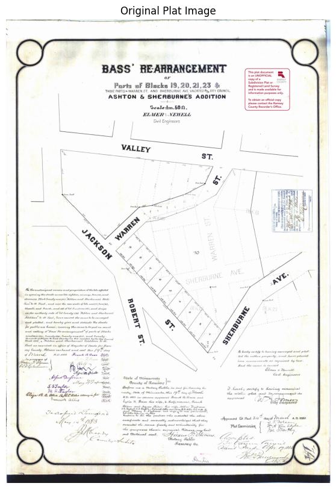
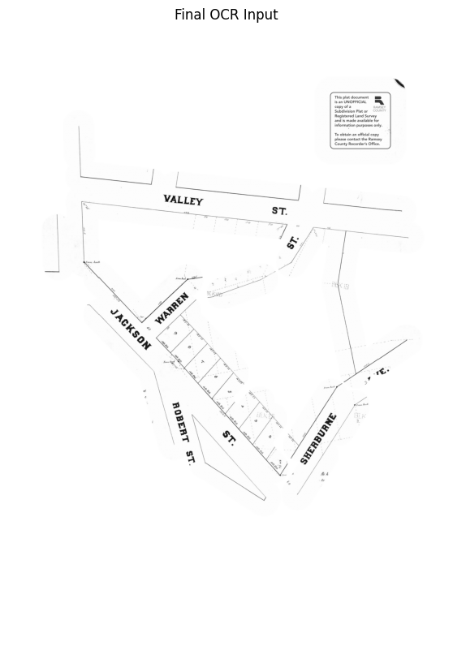
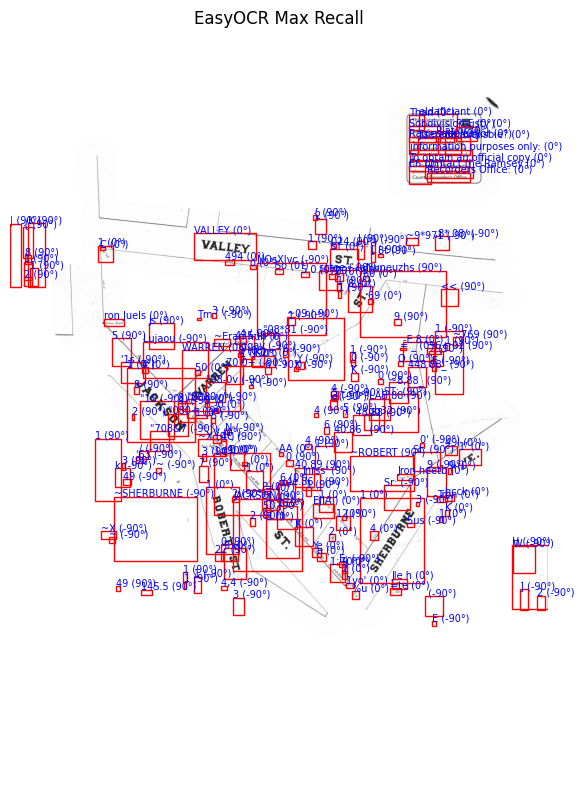

Predicting a 1930s plat map's modern location, using OCR and a street buffer.
A scanned property plat has no coordinates, no metadata, and street labels running in every direction. This pipeline reads the real street names off the scan, matches them against today's street network, and reverse-geocodes the result into an actual modern address.

The problem
County archives hold thousands of these plats — hand-lettered survey documents scanned as flat PDFs, with no shapefile and no coordinate reference.
Running OCR on the whole page doesn't work well. Street names, block numbers, and surveyor's notes all sit in the same visual space, at different angles, in handwriting drawn a century ago. OCR reads all of it indiscriminately, which makes the raw output nearly as unusable as not running OCR at all.
The goal here was to explore different ways to use GIS techniques to solve this problem andbuild one working pipeline on a single plat.
The pipeline
Four stages, in order: clean the scan, isolate the geometry that matters, OCR only that region, match whatever text comes out against a modern street network, then turn the result into an actual address.
Minimal preprocessing
The plat comes in as a scanned PDF and gets converted to a grayscale image — deliberately light preprocessing, since anything more aggressive at this stage risks destroying faint linework before it's been detected.
Isolating the streets
This part took the most iteration. An adaptive threshold turns the scan into a binary ink mask, connected-component filtering strips out small noise, and a line segment detector picks out straight linework — filtered by length and by a margin around the page border, since the border and legend box were consistently mistaken for street lines.
The core idea: instead of classifying which lines were streets, every detected line gets buffered by a fixed pixel radius and the buffers are unioned together. That produces a corridor around anything line-shaped on the page; a standard GIS operation, repurposed here as an OCR mask instead of the usual proximity analysis.


Everything outside those corridors gets masked to white. What's left is mostly street labels and the linework around them; legal text, stamps, and interior lot numbers are gone before the OCR step.
OCR (run for recall instead of precision)
Even inside the masked region, EasyOCR missed labels that ran diagonally — a couple of street names on this plat weren't legible right-side-up. The fix was running OCR three times, rotating the image to 0°, 90°, and -90° each pass, and keeping every hit.
That produces a noisy result with duplicate detections and partial words:

Rather than hard-coding rules to throw results out, each detection gets a weighted rank score — OCR confidence, the ratio of uppercase characters (plat street labels are consistently all-caps), and text size, in that order of priority. Everything above a rank and length threshold survives; duplicates from the multi-angle passes collapse down to the highest-confidence version. On this plat, it correctly surfaced JACKSON, WARREN, VALLEY, SHERBURNE, and ROBERT as the top-ranked candidates.
Matching against the modern map
With a clean list of street names, OSMnx pulls the current street network for Saint Paul and filters it down to edges whose names match. Every matched street's endpoints then get run through DBSCAN, clustering points that sit close together in real-world distance rather than relying on modern intersections — which, a century of reconstruction later, often don't exist in the same place, or at all.
The densest cluster with the most distinct matched streets gets kept, outlier points get trimmed by distance from the cluster's centroid, and what's left gets wrapped in a padded bounding box — the pipeline's best estimate of where this 1930s plat sits on a present-day map.
Reverse geocoding to an address
A bounding box is a shape, not an answer. The last step reverse-geocodes the box's centroid through Nominatim to turn it into a real, human-readable location. For this plat, that comes back as Jackson Street, Frogtown, Saint Paul, Ramsey County, MN 55117 — a modern address, 100 years after the original survey.
What worked, and what didn't
A few approaches got tried and dropped before landing on the pipeline above — worth naming, since the dead ends are as much a part of this as what worked:
- OCR on the full, unmasked image, before the buffer approach — too much non-street text got picked up, and cleaning it afterward proved harder than filtering beforehand.
- Appending "ST" / "AVE" suffixes to bare street names pulled from OCR — dropped once it became clear the street-matching step didn't need suffixes to work.
- Identifying modern intersections as fixed reference points — many intersections on this plat no longer exist as such, which is part of why the pipeline clusters on street proximity instead.
- A handful of geocoding services, tried as a shortcut to the matching step — none handled century-old, partial street names well enough to be usable.
On the DBSCAN step specifically
This is the piece I'm least confident generalizes. It works well for this plat, but the clustering parameters (proximity radius, minimum cluster size) were tuned by hand, and a plat with a different street layout or a sparser modern match would likely need different values. It's a solid first attempt at a genuinely hard sub-problem — matching century-old, incomplete street data against a constantly-changing modern network — rather than a finished method.
The same caveat applies more broadly: this pipeline was tuned against one plat. The buffer distance, the OCR rank thresholds, and the DBSCAN parameters would likely need to flex per-plat to hold up across an archive with different handwriting, scan quality, and street layouts. This was built and documented as a proof of concept, not a production tool, and the notebook says so throughout.
Why this seems worth sharing
There's real, growing interest in pulling structured information out of historical maps.
I think the most useful part of this project might not be the pipeline itself, but the demonstration that a problem framed as "AI/OCR" can be meaningfully narrowed using ordinary spatial reasoning first. The buffer step did more work than the OCR model did.